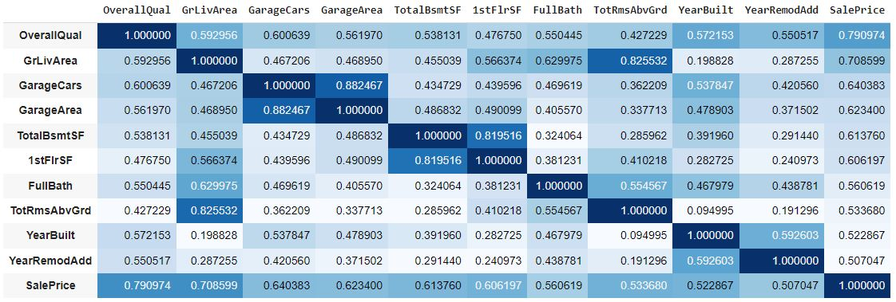
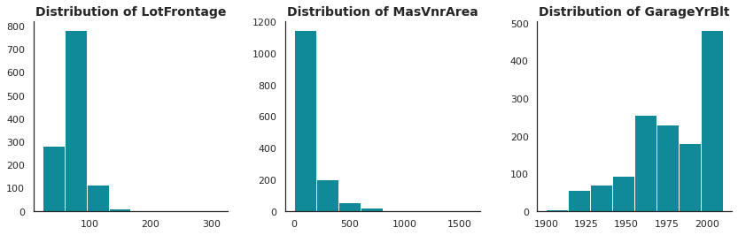
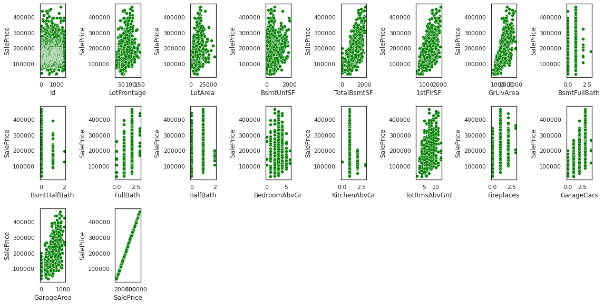

Introduction
This year's data science week was a very fun learning experience, since I got to improve my data analysis and wrangling skills. The datathon was my first hands-on data science project with the goal of trying to predict real estate prices through linear regression and gradient boosting. I partnered up with Elvin Khoirunnisa, a master student from Business IT and we managed to land on the third place of this competition.
Exploratory Data Analysis (EDA)
This dataset had 81 columns, so a lot of variables to consider. First we looked into the data types and found 43 strings, 35 integer and 3 float columns. Then, we took a brief look at missing values of the data, to get an overview. By analyzing the distribution and correlation of numerical variables, we made a correlation matrix with the most important numerical variables to understand the key drivers of the sale price.
Data Wrangling
All the steps on the train set were also applied on the test data set.
Handling Mising Values
We noticed that there are 3 numerical columns with missing values, namely MasVnrArea, GarageYrBlt, LotFrontage. In order to find an appropriate statistic to fill in all nan values, we plotted the distribution of them.
We decided to take the median for LotFrontage and MasVnrArea and the mode for GarageYrBlt.
For categorical variables, we replaced the nan values with their actual information. For example houses that do not have a garage, have missing values in those columns. In that case, we imputed the nan value with 'No garage'.
Numerical Feature Selection
Each numerical variable was assessed and there were four ways on how to deal with them. Some of the numerical variables had outliers, which we removed, in order to improve the performance of the model. Some were falsely classified as integers, so we converted them to string, others had so many '0', so we decided to drop these columns. There were of course also numerical variables, which were totally fine.
Log Transformation
There was the idea to apply log transformation on some of the variables, because some numerical features were suitable for that. In that week, we did not have time to do this, so this will be something for a later point in time.
Model Building and Accuracy
First we declared the dependent and independent variables of the training set. Afterwards, the inputs of the training and test data set were concatenated to generate the dummy variables and standardize all features. We then splitted the training set into train and validation data with their respective inputs and target values. As a machine learning model, we took linear regression with gradient boost, a model that consists of many weak learners that make its predictive power very high.

Train RMSE: 18502
Test RMSE: 22332
Train R-squared: 0.924
Test R-squared: 0.889
Train adjusted R-squared: 0.92
Test adjusted R-squared: 0.9
Code and Resources Used:
Python Version: 3.9.12
Packages: pandas, numpy, sklearn, matplotlib, seaborn, xgboost, statsmodel